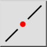
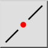
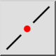
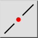

Przerwij
Pasek narzędziowy / ikona:
 

Menu: Modyfikowanie > Przerwij
Skrót: D, 3
Polecenia: breakoutgap | d3
Jest to tłumaczenie automatyczne.
Pasek narzędziowy / ikona:
 

Menu: Modyfikowanie > Przerwij
Skrót: D, 3
Polecenia: breakoutgap | d3
Wybija się szczelina od linii, łuku lub okręgu.